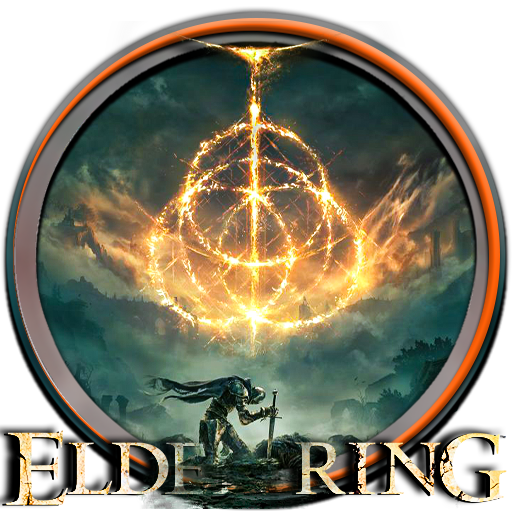
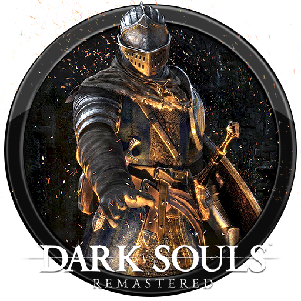
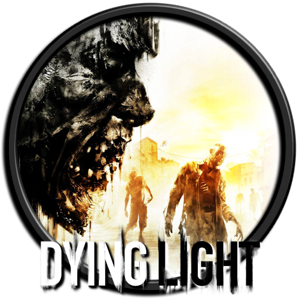

Introduction
I love playing MOBAs and RPGs because they are complex and challenging and offer a brilliant fantasy setting which I am in love with. I listen to shoegaze because it resonates with me and D&B for its energetic tracks. I am learning how to make video games because I want to share to others my game that I am building. I am curious about exploring commercial acting, as I see it as an opportunity to make use of my appearance, gain confidence and experience something new.
Video Games
Video games have been one of my favourite ways to spend my free time. I particularly enjoy MOBAs and RPGs because of their strategic depth, challenging gameplay and immersive worlds. I also enjoy exploring different genres and discovering games with interesting mechanics, stories and world-building.
List of Favourite Games
- League of Legends
-
Elden Ring

-
Dark Souls 1

-
Dying Light

- Kingdom Rush
Music
Music is an important part of my everyday life. I particularly enjoy shoegaze for its atmospheric sound and emotional depth, while Drum and Bass appeals to me because of its energetic rhythms. I am also interested in learning to play my favourite songs on the electric guitar.
Favourite Song
Sorry Days - Quannnic
This song puts me in a trance whenever I listen to it. I love its dreamy, melancholic atmosphere and the way the instrumental complements the lyrics. I find the lyrics particularly interesting because they leave room for different interpretations. To me, they can represent the feeling of losing track of time, getting caught up in something you enjoy or even becoming trapped in a habit, only to realize how much time has passed and how little of the day is left.
Game Development
Game development is something I would love to pursue further. I enjoy the idea of combining programming, creativity and game design to create interactive experiences. My goal is to eventually develop a game of my own and share it with other people.
Comercial Casting
Another field I would like to explore is commercial acting. I am curious about participating in advertising castings and seeing what opportunities this experience could bring. I also see it as a way to step outside my comfort zone, make use of my appearance and become more confident.